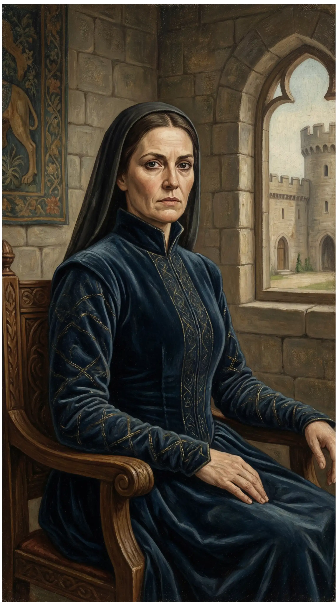

L'Histoire à travers les Âges
Chaque tome explore une période cruciale de l'histoire européenne, montrant comment les individus, la foi et la communauté traversent les bouleversements historiques.

Tome I : Fondation
Période : XIe siècle.
Quatre hommes brisés arrivent au prieuré naissant d'Oelenberg et trouvent la rédemption à travers la construction, l'art et la foi.

Tome II : Épreuve
Thème : Foi et violence.
Durant les Première et Deuxième Croisades, tension entre l'idéal chrétien et la réalité des croisades.

Tome III : Survie
Thème : Humanité dans la barbarie.
Pendant la Guerre de Trente Ans, survie et humanité au milieu de la barbarie, œcuménisme face au fanatisme.

Tome IV : Identité
Thème : Entre deux mondes.
De la Révolution française à la Guerre franco-prussienne, l'Alsace comme terre déchirée.

Tome V : Renaissance
Thème : Mémoire et avenir.
Traversant les guerres mondiales jusqu'au monde contemporain, mémoire, réconciliation et renaissance spirituelle dans un monde sécularisé.